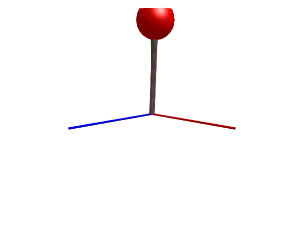

Ropes, cables, chains and strings
Ropes, cables and strings may be modeled using the Rope component. This component models a rope as a series of links connected by spherical joints, where each link is either
- Stiff, and modeled as a
BodyShape - Elastic, and modeled as a
Spring, aDamperandPrismaticin parallel.
The total mass of the rope is controlled by the parameter m, and this is distributed evenly across the links with m/n units of mass on each link.
If the rope is elastic, the total spring coefficient of all links is governed by c, and each link as a coefficient of c*n, the same holds for the damping d.
Stiff rope
We start by simulating a stiff rope that is attached to the world in one end and to a mass in the other. The rope is made stiff (inelastic) by setting c = 0.
using Multibody
using ModelingToolkit
using Plots
using JuliaSimCompiler
using OrdinaryDiffEq
using Test
t = Multibody.t
world = Multibody.world
number_of_links = 6
@named rope = Rope(l = 1, m = 1, n=number_of_links, c=0, d=0, air_resistance=0, d_joint=1, radius=0.03, color=[0.5, 0.4, 0.4, 1], dir=[0.05, 1, 0])
@named body = Body(; m = 1, radius=0.2)
connections = [connect(world.frame_b, rope.frame_a)
connect(rope.frame_b, body.frame_a)]
@named stiff_rope = ODESystem(connections, t, systems = [world, body, rope])
ssys = structural_simplify(IRSystem(stiff_rope))
prob = ODEProblem(ssys, [], (0, 5))
sol = solve(prob, Rodas4(autodiff=false))
@test SciMLBase.successful_retcode(sol)
import GLMakie
Multibody.render(stiff_rope, sol, filename = "stiff_rope.gif") # May take long time for n>=10("stiff_rope.gif", LScene(), Scene (600px, 450px):
0 Plots
1 Child Scene:
└ Scene (600px, 450px))
Elastic rope
Next up we model an elastic rope, we do this by setting c > 0. We also introduce some damping
world = Multibody.world
number_of_links = 6
@named rope = Rope(l = 1, m = 5, n=number_of_links, c=800.0, d=0.01, d_joint=0.1, air_resistance=0.2, dir=[0.2, 1, 0])
@named body = Body(; m = 300, radius=0.2)
connections = [connect(world.frame_b, rope.frame_a)
connect(rope.frame_b, body.frame_a)]
@named flexible_rope = ODESystem(connections, t, systems = [world, body, rope])
ssys = structural_simplify(IRSystem(flexible_rope))
prob = ODEProblem(ssys, [], (0, 8))
sol = solve(prob, Rodas4(autodiff=false));
@test SciMLBase.successful_retcode(sol)
Multibody.render(flexible_rope, sol, y = -3, x = -6, z = -6, lookat=[0, -3, 0], filename = "flexible_rope.gif") # May take long time for n>=10("flexible_rope.gif", LScene(), Scene (600px, 450px):
0 Plots
1 Child Scene:
└ Scene (600px, 450px))A chain suspended in two points
When a Rope component is used to model a chain that is suspended between two fixed points, a kinematic loop is formed. To break this loop, we introduce a spring in one end.
number_of_links = 8
chain_length = 2
x_dist = 1.5 # Distance between the two mounting points
systems = @named begin
chain = Rope(l = chain_length, m = 5, n=number_of_links, c=0, d_joint=0.2, dir=[1, 0, 0], color=[0.5, 0.5, 0.5, 1], radius=0.05)
spring = Spring(c = 2000)
fixed = FixedTranslation(; r=[x_dist, 0, 0], radius=0.02, color=[0.1,0.1,0.1,1]) # Second mounting point
end
connections = [connect(world.frame_b, fixed.frame_a, chain.frame_a)
connect(chain.frame_b, spring.frame_a)
connect(spring.frame_b, fixed.frame_b)]
@named mounted_chain = ODESystem(connections, t, systems = [systems; world])
ssys = structural_simplify(IRSystem(mounted_chain))
prob = ODEProblem(ssys, [
collect(chain.link_8.body.w_a) .=> [0,0,0];
collect(chain.link_8.frame_b.r_0) .=> [x_dist,0,0];
], (0, 4))
sol = solve(prob, Rodas4(autodiff=false))
@test SciMLBase.successful_retcode(sol)
Multibody.render(mounted_chain, sol, x=3, filename = "mounted_chain.gif") # May take long time for n>=10("mounted_chain.gif", LScene(), Scene (600px, 450px):
0 Plots
1 Child Scene:
└ Scene (600px, 450px))